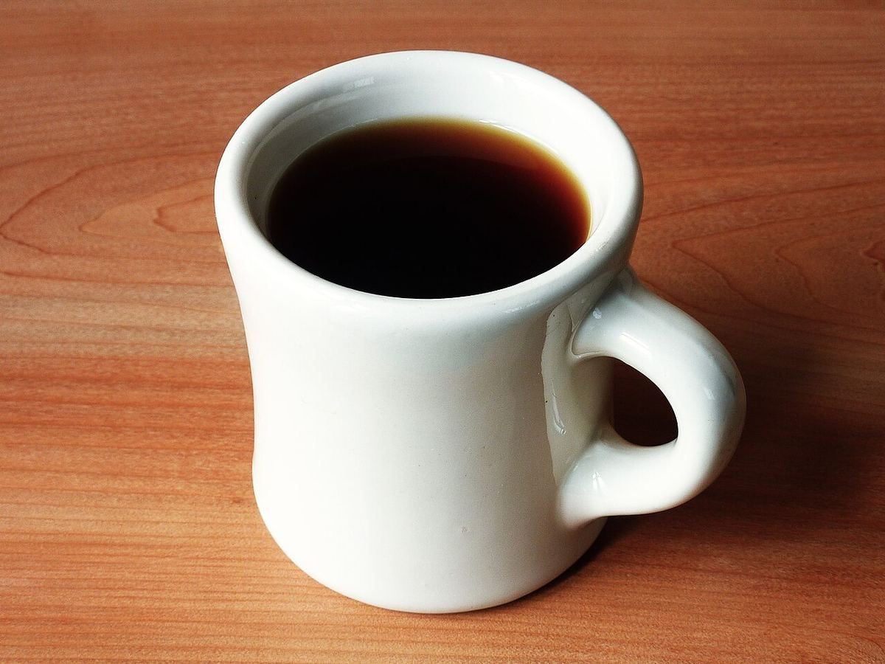

店のこと
店のこと
お店について確認できているのは、所在地とInstagramのアカウントだけです。
このページの「想像してみる」部分は、制作側が想像して書いたものです。お店の実際の様子・考え・メニューとは関係がありません。
確認できていること
- 店名は「リヤコーヒー」、業種はカフェ
- 所在地は長野県伊那市西町４８６５−３(〒396-0026)
- 連絡はInstagramから
- 営業時間・定休日・メニュー・価格・ご予約・駐車場は準備中

想像してみる
「リヤ」という名前から
由来は分かりません。制作側は、車のルームミラーのように、ふと後ろを振り返る時間を思い浮かべました。お店のことも、まずは小さな窓越しにのぞいてもらえたら、という発想です(実際のお店の姿ではありません)。
制作側の連想で、お店の理念・由来とは無関係です。